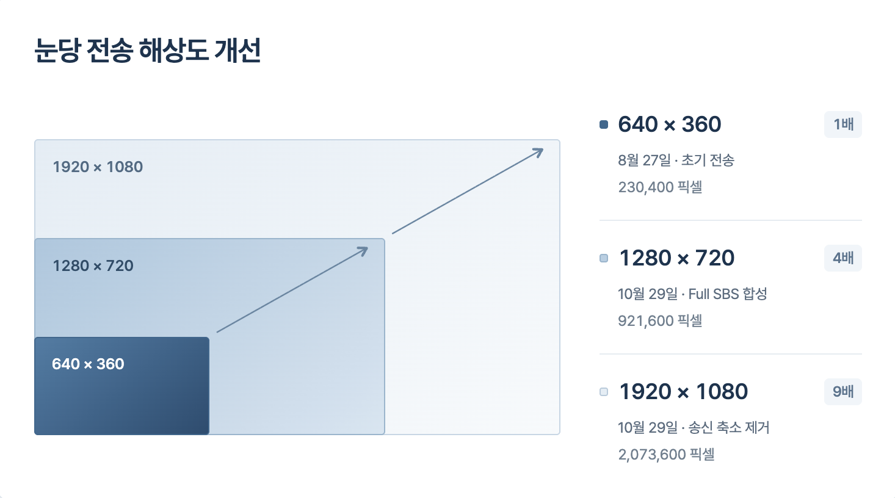

← 개발 기록ENDOSCOPIC VIDEO / SERIES내시경 입력 연결과수신 영상 비교수술실 영상을 직접 개발한 Mac·XR 앱으로 연결했습니다.장비 연결, 영상 처리·전송 설정, 화질 조정과 측정 결과를 정리했습니다. 시리즈 구성7편00소개수술실 내시경 영상을 XR로 가져오기XR 수술 보조 환경의 구상과 첫 작업인 내시경 영상 연결.01장비별 연결CV-190의 영상 출력과 캡처 구성SBS 1입력 / 좌우 2입력OTV-S300의 단일 SBS 입력DVI · SBS 한 입력OTV-S700의 SDI 영상 연결SDI 출력 선택 · 녹화·XR 분배STORZ의 2D 캡처와 XR 전송2D · USB 직결 / Mac 무선02영상 처리·전송 구조내시경 영상을 XR로 전송하는 구조프레임 동기화·SBS 합성·WebRTC두 입력의 합성단일 SBS·2D 입력인코딩·전송03화질 개선 기록CV-190의 눈당 Full HD 전송합성·송신 축소 제거와 수신 측정